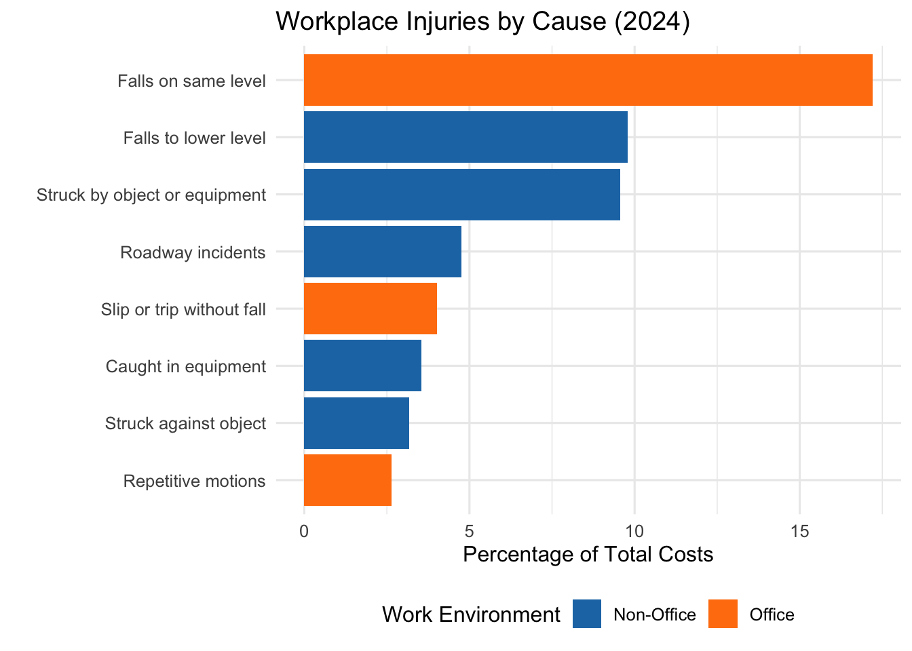
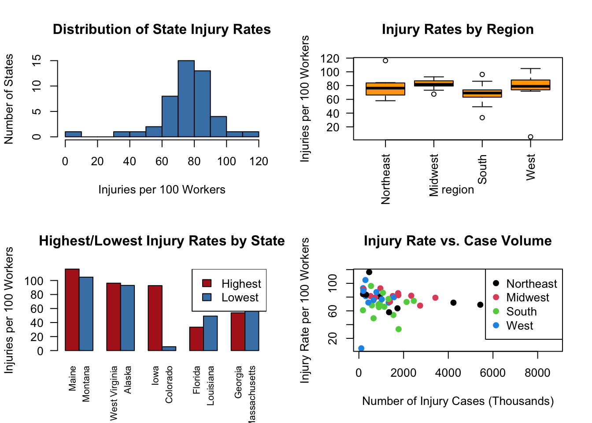

Appendix D — Draft: Results
D.1 Comparing Injury Costs Between Office and Non-Office Environments
An analysis of workplace injury data reveals that office environments contribute for (23.88%) of total workplace injury costs, with same-level falls (17.21%) being the leading cause of injuries in office settings. In contrast, non-office environments represent a larger share of injury costs at (30.81%), primarily due to falls to lower levels (9.78%) and being struck by objects (9.56%).
To determine whether these differences in injury cost proportions are statistically significant, I conducted a two-sample t-test. The results showed no significant difference between office and non-office environments, t(2.40) = 0.37, p = 0.74. lthough office environments had a higher average injury cost proportion (M = 7.96%, SD = 8.04) compared to non-office environments (M = 6.16%, SD = 3.26), the 95% confidence interval [-16.11, 19.71] includes zero, suggesting that the observed difference could be due to random chance and is not statistically significant.
Figure 1 illustrates that office-related falls contribute more than twice the costs of non-office falls (21.23% vs. 9.78%). This is consistent with the data presented in Table 1, which breaks down injury costs by cause and environment:
| Injury Cause | % of Costs | Environment |
|---|---|---|
| Falls on same level | 17.21 | Office |
| Falls to lower level | 9.78 | Non-Office |
| Struck by object or equipment | 9.56 | Non-Office |
| Roadway incidents | 4.76 | Non-Office |
| Slip or trip without fall | 4.02 | Office |
| Caught in equipment | 3.54 | Non-Office |
| Struck against object | 3.17 | Non-Office |
| Repetitive motions | 2.65 | Office |
Falls, particularly same-level falls and slips in office environments, contribute significantly to injury costs. Office-related falls account for 21.23% of fall-related injury costs, compared to just 9.78% for non-office falls. This highlights the financial impact of seemingly minor but frequent office accidents.
| Environment | Total % of Costs | Proportion of Falls (%) |
|---|---|---|
| Non-Office | 9.78 | 31.54 |
| Office | 21.23 | 68.46 |
Table 2 further illustrates that office environments contribute a larger proportion (68.46%) of fall-related injury costs, despite non-office environments accounting for a greater share of total injury costs.
| Environment | Total % | Average % per Cause | Proportion of Total (%) |
|---|---|---|---|
| Non-Office | 30.81 | 6.16 | 56.34 |
| Office | 23.88 | 7.96 | 43.66 |
Table 3 summarizes the overall distribution of injury costs by work environment. While non-office environments account for a larger share of total injury costs (30.81%), office environments have a higher average cost per injury cause (7.96% vs. 6.16%). This suggests that although injuries in office settings may occur less frequently, they tend to be more expensive on a per-cause basis.
D.2 Regional and State-Level Injury Trends
Workplace injury rates shows significant geographic variation across the United States. The Midwest reports the highest injury rate at 82.12 per 100 workers, which may be due to the region’s concentration of labor-intensive industries. In contrast, the south has the lowest rate at 67.64 per 100 workers, possibly reflecting stronger workplace safety regulations or a higher proportion of office-based jobs.
While injury rates vary across regions, a one-way ANOVA revealed no statistically significant differences in injury rates (p = 0.168), suggesting that regional variations in injury rates are not substantial enough to impact injury rates in a statistically meaningful way.
I also conducted a Pearson correlation between total injury case volume and injury rates by state. The analysis found no significant correlation (r = -0.09, p = 0.553), indicating that states with higher total injury case volumes do not necessarily experience higher injury rates per 100 workers.

Figure 2 illustrates that the Midwest has both the highest median and the most variable injury rates across regions.
| Region | Average Rate | Median Rate | Number of States | Total Injuries (Thousands) |
|---|---|---|---|---|
| Midwest | 82.12 | 81.80 | 12 | 17559.2 |
| Northeast | 78.41 | 76.35 | 8 | 14637.4 |
| West | 76.28 | 79.00 | 12 | 15210.3 |
| South | 67.64 | 69.20 | 15 | 24878.8 |
At the state level, Maine has the highest injury rate at 116.3 per 100 workers more than 20 times higher than Colorado’s rate of 5.5 per 100 workers, which is the lowest. Despite this difference, correlation analysis (r = -0.09, p = 0.553) suggests no significant relationship between injury case volume and injury rate, indicating that states with higher total injury counts do not necessarily have higher injury rates.
| Rank | State | Injury Rate | Cases (Thousands) | Region |
|---|---|---|---|---|
| Lowest | Massachusetts | 58.0 | 1349.6 | Northeast |
| Lowest | Georgia | 53.9 | 1543.7 | South |
| Lowest | Louisiana | 49.2 | 656.3 | South |
| Lowest | Florida | 33.4 | 1776.2 | South |
| Lowest | Colorado | 5.5 | 107.5 | West |
| Highest | Maine | 116.3 | 459.8 | Northeast |
| Highest | Montana | 104.8 | 292.8 | West |
| Highest | West Virginia | 96.2 | 543.2 | South |
| Highest | Alaska | 93.0 | 186.9 | West |
| Highest | Iowa | 92.7 | 961.2 | Midwest |